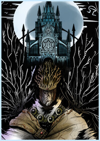

|  | Irithyll of the Boreal Valley
Wherever you go, the Moon still sets in Irithyll.
Irithyll of the Boreal Valley is known to be an ancient city. It is difficult to say when exactly it was built, but what is known for sure is that it is that it did exist during Gwyn's first age of fire and it was home to nobles who worshiped the moon and supported Gwyndolin. At some point, the sorcerer Sulyvahn passed through it to get to Anor Londo, the city of the gods, and begin to usurp their kingdom. After his plan had been unfolded and the royal family was either exiled or imprisoned, Irithyll was shut off from the rest of the world. Sulyvahn blocked the entrance to the city with a spell to ensure that the only one who would be able to return was Aldrich, when he was resurrected as a lord. He did this by making it so that only those holding a small doll, which was Aldrich's possession, could go through the fog wall. Most of the old nobles who resided in the city were enslaved and corrupted by either the deep and darkness of the abyss, the profaned flame and the fire witches or the beasthood which Sulyvahn forced upon them. Sulyvahn, now a Pontiff resides within the old cathedral. |